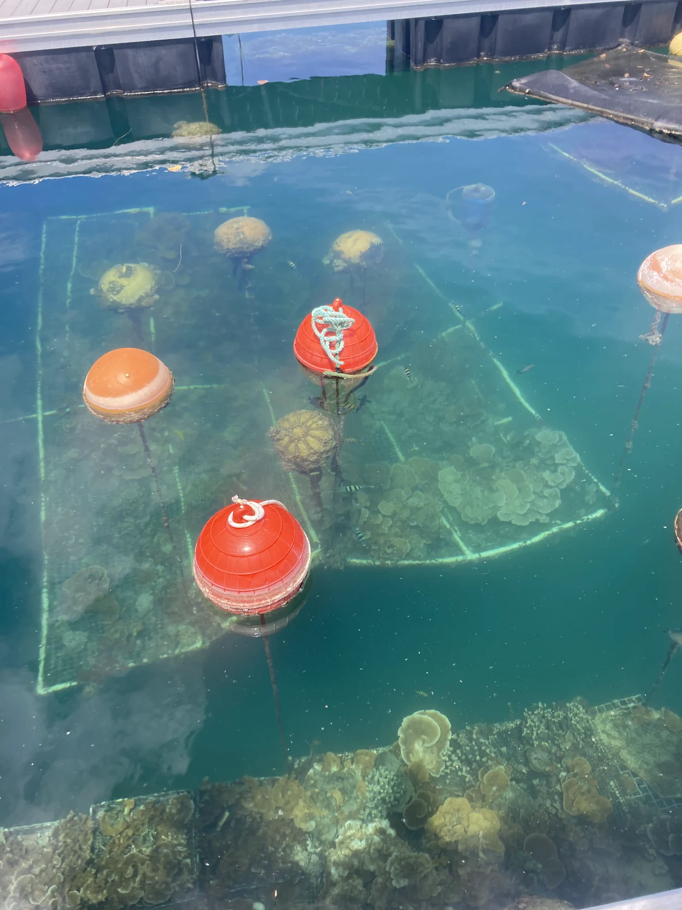
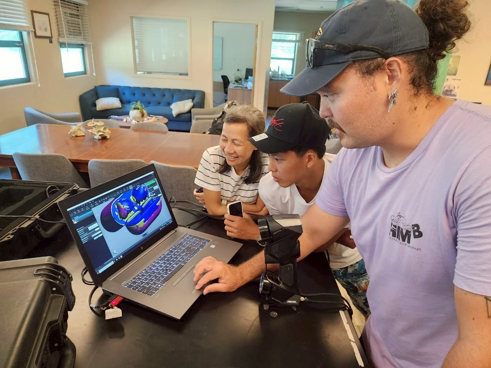
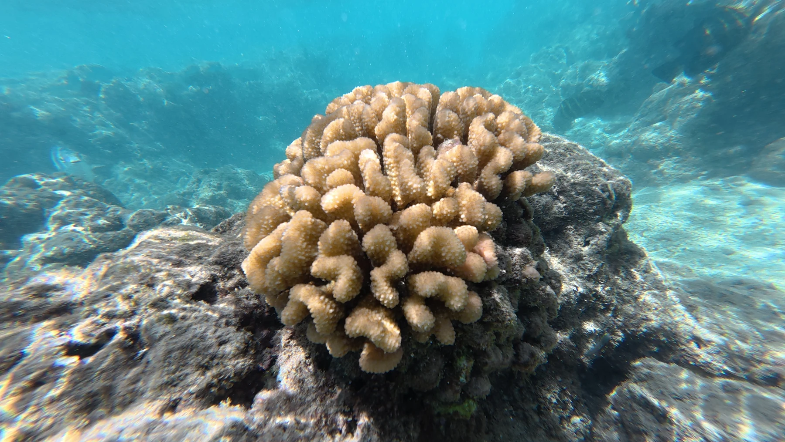
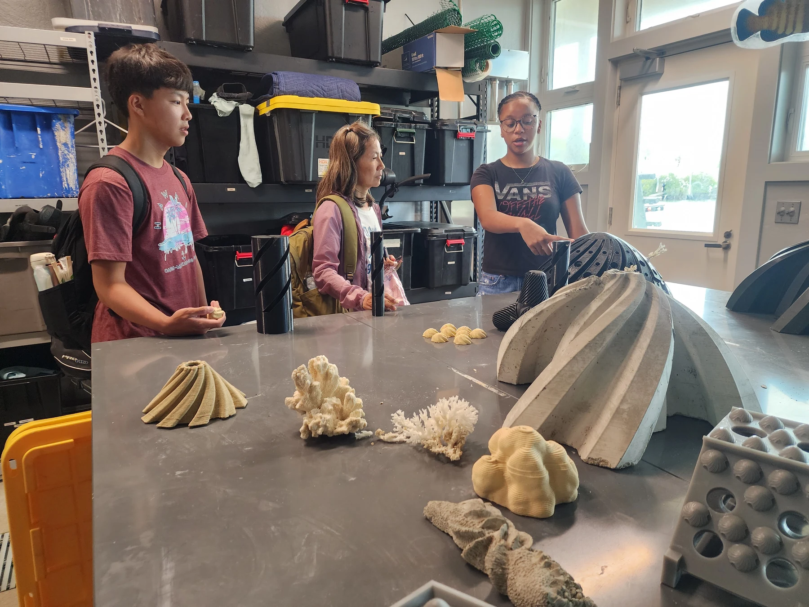
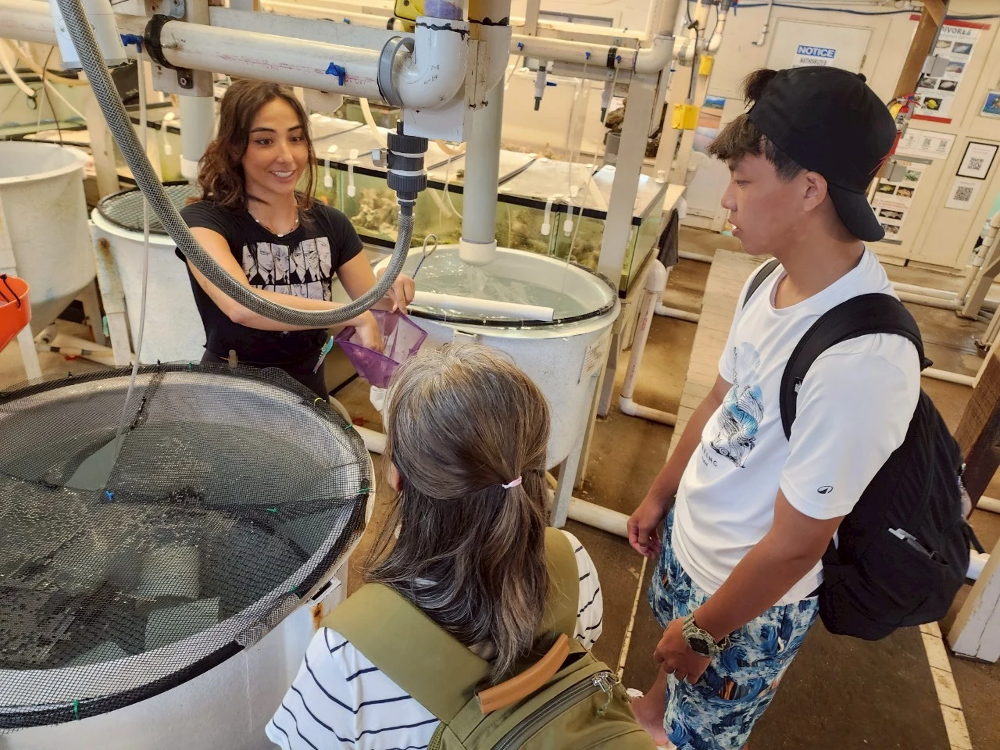
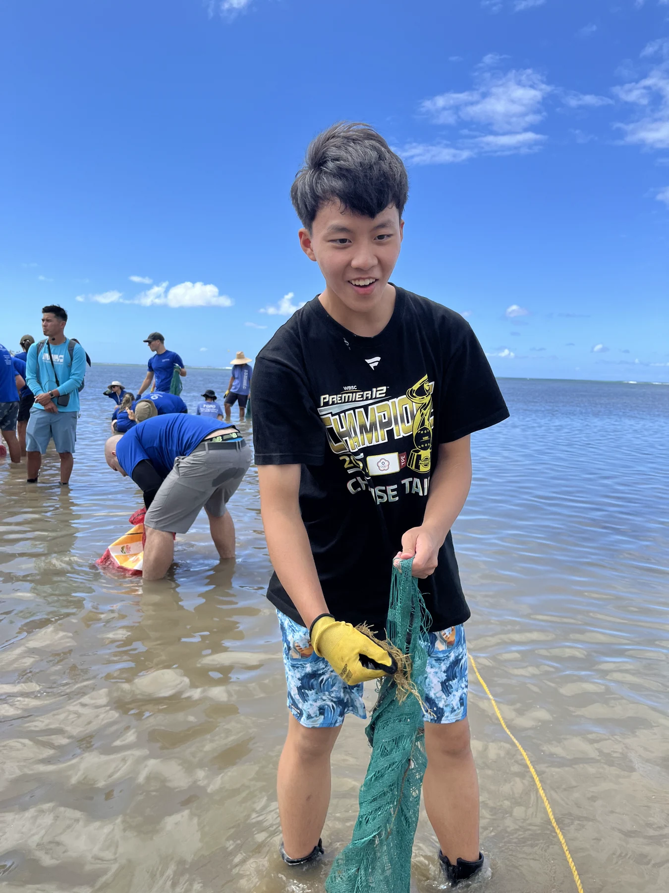
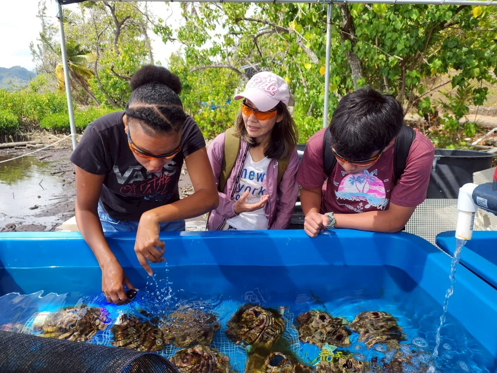
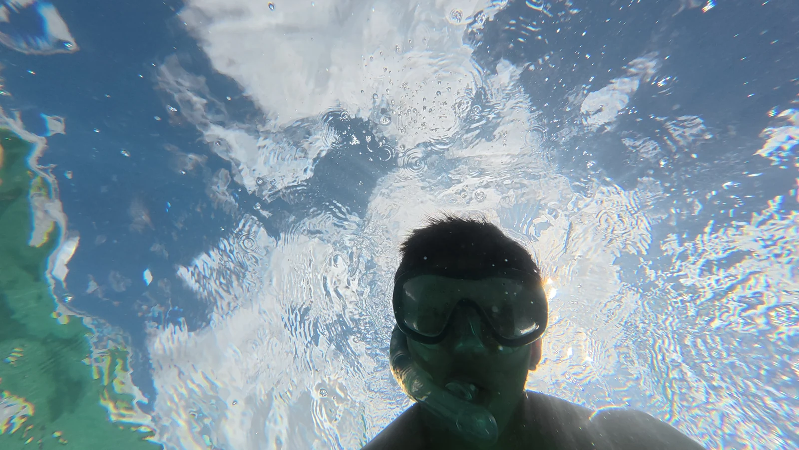
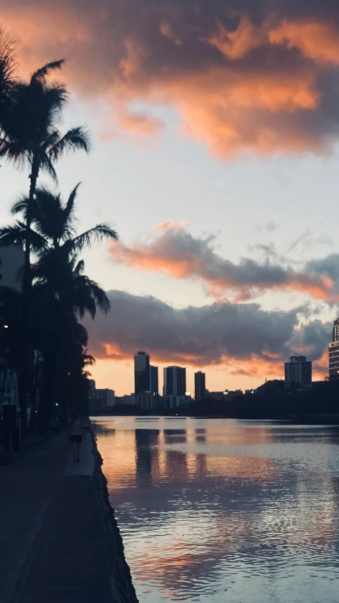

Environment / Field learning
Understand the environment.
Then ask what to measure.
Coral conservation connected my interests in environmental engineering with sensing, data, and the tools used to observe a changing ecosystem.

01 An independently prepared proposal
From Taiwan
to Moku o Loʻe.
I independently prepared my application and proposal for the Taiwan Global Pathfinders Initiative Program (青年百億海外圓夢基金計畫). With approximately NT$280,000 in government funding, I completed preparatory training in Taiwan and an overseas learning program in Hawaii.
The experience was an opportunity to learn conservation methods in context—not a claim to have produced original research findings.
Across the Pacific / Taiwan → Hawaiʻi
Moku o Loʻe.
Coconut Island.
Coastlines: Natural Earth · Illustrative journey, not a flight itinerary. Island marker enlarged for visibility.


02 NMMBA / Taiwan
Build the field foundation.
At the National Museum of Marine Biology and Aquarium, preparatory training introduced me to coral identification, marine ecology, bleaching, restoration, and research methods.
Identify & observe
Learn to recognize corals and understand how observations relate to marine ecology.
Understand the stressors
Study coral bleaching, restoration approaches, and the methods used to investigate reef conditions.
03 HIMB / Coconut Island
Many ways to
observe one ecosystem.
At the Hawaii Institute of Marine Biology, I learned about the following methods through the program. These were learning and participation experiences; I do not present them as independently validated research outputs.
Coral care
Coral nursery and propagation work, coral-health observation, water-quality monitoring, and CoralWatch.
Mapping & measurement
Structure-from-Motion (SfM), 3D mapping, GIS and R, and drone / aerial monitoring concepts.
Images into information
ReefCloud and the application of AI and computer vision to marine conservation.

Learning beyond the nursery
Broader perspectives.
I attended the Hawaii Conservation Conference and earned PADI Open Water certification. Together with the field sessions, these experiences expanded how I think about conservation and environmental work.
Field notebook / Closer than a screen
Look around.
Then look closer.



05 Field notebook / Photography
Learning, in context.






Hawaiʻi / After the field sessions

Carry the
perspective home.
The journey connected environmental questions with my interest in sensing, computer vision and engineering.